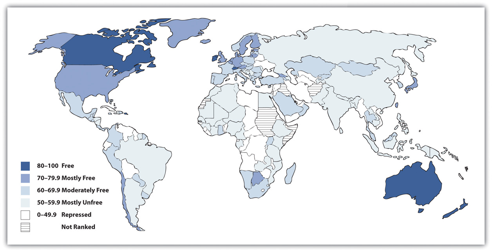

When we hear the term economy, it is usually in the context of how the economy “is doing”: Is inflation soaring or under control? Is the economy growing or shrinking? Is unemployment rising, declining, or remaining stable? Are new college graduates finding jobs easily or not? All these questions concern the economy, but sociologists define economyThe social institution that organizes the production, distribution, and consumption of a society’s goods and services. more broadly as the social institution that organizes the production, distribution, and consumption of a society’s goods and services. Defined in this way, the economy touches us all. Keep in mind that the economy is not the same as government, which is the social institution through which power is distributed and exercised. Economy and government are social institutions that are certainly intertwined, but conceptually they are distinct.
The economy is composed of three sectors. The primary sectorThe part of the economy that takes and uses raw materials directly from the natural environment. is the part of the economy that takes and uses raw materials directly from the natural environment. Its activities include agriculture, fishing, forestry, and mining. The secondary sectorThe part of the economy that transforms raw materials into finished products. of the economy transforms raw materials into finished products and is essentially the manufacturing industry. Finally, the tertiary sectorThe part of the economy that provides services rather than products. is the part of the economy that provides services rather than products; its activities include clerical work, health care, teaching, and information technology services.
Societies differ in many ways, but they all have to produce, distribute, and consume goods and services. How this happens depends on which sectors of the economy are most important. This latter variable in turn depends heavily on the level of a society’s development. Generally speaking, the less developed a society’s economy, the more important its primary sector; the more developed a society’s economy, the more important its tertiary sector. As societies developed economically over the centuries, the primary sector became less important and the tertiary sector became more important. The primary sector was certainly the only sector in the hunting-and-gathering societies that existed thousands of years ago, while the tertiary sector dominates much of the economy in today’s wealthiest democracies.
The two major economic systems in modern societies are capitalism and socialism. In practice, no one society is purely capitalist or socialist, so it is helpful to think of capitalism and socialism as lying on opposite ends of a continuum. Societies’ economies mix elements of both capitalism and socialism but do so in varying degrees, so that some societies lean toward the capitalist end of the continuum, while other societies lean toward the socialist end. For example, the United States is a capitalist nation, but the government still regulates many industries to varying degrees. The industries usually would prefer less regulation, while their critics usually prefer more regulation. The degree of such regulation was the point of controversy after the failure of banks and other financial institutions in 2008 and 2009. Let’s see how capitalism and socialism differ.
CapitalismAn economic system in which the means of production are privately owned. is an economic system in which the means of production are privately owned. By means of production, we mean everything—land, tools, technology, and so forth—that is needed to produce goods and services. As outlined by famed Scottish philosopher Adam Smith (1723–1790), widely considered the founder of modern economics, the most important goal of capitalism is the pursuit of personal profit (Smith, 1776/1910).Smith, A. (1910). The wealth of nations. (Original work published 1776). London, United Kingdom: University Paperbacks. As individuals seek to maximize their own wealth, society as a whole is said to benefit. Goods get produced, services are rendered, people pay for the goods and services they need and desire, and the economy and society as a whole prosper.
As people pursue personal profit under capitalism, they compete with each other for the greatest profits. Businesses try to attract more demand for their products in many ways, including lowering prices, creating better products, and advertising how wonderful their products are. In capitalist theory, such competition helps ensure the best products at the lowest prices, again benefiting society as a whole. Such competition also helps ensure that no single party controls an entire market. According to Smith, the competition that characterizes capitalism should be left to operate on its own, free of government intervention or control. For this reason, capitalism is often referred to as laissez-faire (French for “leave alone”) capitalism, and terms to describe capitalism include the free-enterprise system and the free market.
The hallmarks of capitalism, then, are private ownership of the means of production, the pursuit of profit, competition for profit, and the lack of government intervention in this competition.
The features of socialism are the opposite of those just listed for capitalism and were spelled out most famously by Karl Marx. SocialismAn economic system in which the means of production are collectively owned, usually by the government. is an economic system in which the means of production are collectively owned, usually by the government. Whereas the United States has several airlines that are owned by airline corporations, a socialist society might have one government-owned airline.
The most important goal of socialism is not the pursuit of personal profit but rather work for the collective good: The needs of society are considered more important than the needs of the individual. Because of this view, individuals do not compete with each other for profit; instead they work together for the good of everyone. If under capitalism the government is supposed to let the economy alone, under socialism the government controls the economy.
The ideal outcome of socialism, said Marx, would be a truly classless or communist society. In such a society all members are equal, and stratification does not exist. Obviously Marx’s vision of a communist society was never fulfilled, and nations that called themselves communist departed drastically from his vision of communism.
Recall that societies can be ranked on a continuum ranging from mostly capitalist to mostly socialist. At one end of the continuum, we have societies characterized by a relatively free market, and at the other end we have those characterized by strict government regulation of the economy. Figure 12.1 "Capitalism and Socialism across the Globe" depicts the nations of the world along this continuum. Capitalist nations are found primarily in North America and Western Europe but also exist in other parts of the world.
Figure 12.1 Capitalism and Socialism across the Globe
Source: Adapted from The Heritage Foundation. (2010). Distribution of economic freedom. Retrieved from http://www.heritage.org/index/pdf/2010/Index2010_map.pdf.
People have debated the relative merits of capitalism and socialism at least since the time of Marx (Bowles, 2012; Cohen, 2009).Bowles, P. (2012). Capitalism. New York, NY: Longman; Cohen, G. A. (2009). Why not socialism? Princeton, NJ: Princeton University Press. Compared to socialism, capitalism has several advantages. It produces greater economic growth and productivity, at least in part because it provides more incentives (i.e., profit) for economic innovation. It also is often characterized by greater political freedom in the form of civil rights and liberties. As an economic system, capitalism seems to lend itself to personal freedom: Because its hallmarks include the private ownership of the means of production and the individual pursuit of profit, there is much more emphasis in capitalist societies on the needs and desires of the individual and less emphasis on the need for government intervention in economic and social affairs.
Yet capitalism also has its drawbacks. There is much more economic inequality in capitalism than in socialism. Although capitalism produces economic growth, not all segments of capitalism share this growth equally, and there is a much greater difference between the rich and poor than under socialism. People can become very rich in capitalist nations, but they can also remain quite poor.
Another possible drawback depends on whether you prefer competition or cooperation. It is often said that important values in the United States include competition and individualism, both of which arguably reflect this nation’s capitalist system. Children in the United States are raised with more of an individual orientation than children in socialist societies, who learn that the needs of their society are more important than the needs of the individual. Whereas US children learn to compete with each other for good grades, success in sports, and other goals, children in socialist societies learn to cooperate to achieve tasks.
More generally, capitalism is said by its critics to encourage selfish and even greedy behavior: If individuals try to maximize their profit, they do so at the expense of others. In competition, someone has to lose. A company’s ultimate aim, and one that is generally lauded, is to maximize its profits by driving another company out of the market altogether. If so, that company succeeds even if some other party is hurting. The small mom-and-pop grocery stores, drugstores, and hardware stores are almost a thing of the past, as big-box stores open their doors and drive their competition out of business. To its critics, then, capitalism encourages harmful behavior, and there are many losers in capitalism. Yet it is precisely this type of behavior that is taught in business schools.
As a business columnist recently summarized these problems of capitalism,
Why does one have to be a Democrat or a liberal to complain bout the way business gets done? Like most Americans, I am OK with the notion that free-market capitalism produces winners and losers. What I don’t like is that it also produces liars, cheaters, swindlers, self-dealing narcissists, overleveraged idiots and reckless egomaniacs out to abuse their economic power and take unfair advantage of hard-working people.
I don’t complain about fraud, abuse and folly because I am antibusiness or anticapitalist…What free-market capitalism hasn’t yet figured out is what to do with all its losers. At this point in the economic cycle, they are piling up like used tires: debt-sacked college kids who can’t get jobs, foreclosed homeowners, failed small-business owners, pink-slipped employees, [and] millions suddenly ejected from the middle class. (Lewis, 2012, p. C3)Lewis, A. (2012, January 14–15). Occupy Mitt Romney! Bangor Daily News, p. C3.
Some nations combine elements of both capitalism and socialism and are called social democracies, while their combination of capitalism and socialism is called democratic socialismAn economic system in which the government owns several important industries, but much property remains in private hands, and political freedom is widespread.. In these nations, which include Denmark, Sweden, and several other Western European nations, the government owns several important industries, but much property remains in private hands, and political freedom is widespread. The governments in these nations have extensive programs to help the poor and other people in need. Although these nations have high tax rates to help finance their social programs, their experience indicates it is very possible to combine the best features of capitalism and socialism while avoiding their faults (Russell, 2011)Russell, J. W. (2011). Double standard: Social policy in Europe and the United States (2nd ed.). Lanham, MD: Rowman & Littlefield. (see Note 12.10 "Lessons from Other Societies").
Democratic Socialism in Scandinavia
The five Scandinavian nations, also called the Nordic nations, are Denmark, Finland, Iceland, Norway, and Sweden. These nations differ in many ways, but they also share many similarities. In particular, they are all social democracies, as their governments own important industries while their citizens enjoy much political freedom. Each nation has the three branches of government with which most people are familiar—executive, judicial, and legislative—and each nation has a national parliament to which people are elected by proportional representation.
Social democracies like the Scandinavian nations are often called controlled capitalist market economies. The word controlled here conveys the idea that their governments either own industries or heavily regulate industries they do not own. A key feature of these social democracies’ economies is that inequality in wealth and income is not generally tolerated. Employers, employees, and political officials are accustomed to working closely to ensure that poverty and its related problems are addressed as much as possible and in as cooperative a manner as possible.
Underlying this so-called social welfare model is a commitment to universalism. All citizens, regardless of their socioeconomic status or family situation, receive various services, such as child care and universal health care, that are free or heavily subsidized. To support this massive provision of benefits, the Scandinavian nations have very high taxes that their citizens generally accept as normal and necessary.
The Scandinavian nations rank at or near the top in international comparisons of health, education, economic well-being, and other measures of quality of life. The Scandinavian experience of social democracy teaches us that it is very possible to have a political and economic model that combines the best features of capitalism and socialism while retaining the political freedom that citizens expect in a democracy.
Sources: Russell, 2011; Sejersted, 2011Russell, J. W. (2011). Double standard: Social policy in Europe and the United States (2nd ed.). Lanham, MD: Rowman & Littlefield; Sejersted, F. (2011). The age of social democracy: Norway and Sweden in the twentieth century (R. Daly, Trans.). Princeton, NJ: Princeton University Press.
We now turn from a general discussion of economic systems to some basic facts on the labor force in the world’s leading capitalist nation, the United States. The civilian labor forceAll noninstitutionalized civilians 16 years old or older who work for pay or are looking for work. in the United States consists of all noninstitutionalized civilians 16 years of age or older who work for pay or are looking for work. The civilian labor force (hereafter labor force) consists of about 154 million people, or almost two-thirds of the population, including about 71 percent of men and 58 percent of women (Bureau of Labor Statistics, 2012).Bureau of Labor Statistics. (2012). 2012 employment and earnings online. Washington, DC: Author. Retrieved from http://www.bls.gov/opub/ee/home.htm.
Of those who are currently employed, approximately 2.4 million people work in the agricultural sector, and a much larger number, 138 million, work in nonagricultural industries. Of the latter number, 109 million work in private industry, 21 million work in government, and almost 9 million are self-employed. Most of the currently employed work full-time, but more than 26 million work only part-time. Of this number, 69 percent work part-time for noneconomic reasons; for example, they have childcare or other family obligations, or they are in school. Another 31 percent work part-time for economic reasons: They are unable to find a full-time job, or they may have lost a full-time job because of the faltering economy.
Approximately 87 million Americans ages 16 and older are not in the labor force. Of this number, 93 percent do not desire a job. Most of these individuals are retired, disabled, or taking care of children and/or other family members. Of the 7 percent who would like a job but are still not in the labor force, most have dropped out of the labor force (stopped looking for a job) because they have become discouraged after previously looking for work but not finding a job.
Some 5 percent of currently employed people have two or more jobs at any one time. This percentage translates to about 7 million individuals. It varies slightly by gender: 5.3 percent of employed women have at least two jobs, compared to 4.7 percent of employed men.
Chapter 4 "Gender Inequality" noted that women’s labor force participation soared during the last few decades. This general increase is even steeper for married women with children under 6 years of age: In 2009, almost 62 percent of such women were in the labor force, compared to less than 19 percent in 1960 (US Census Bureau, 2012),US Census Bureau. (2012). Statistical abstract of the United States: 2012. Washington, DC: US Government Printing Office. Retrieved from http://www.census.gov/compendia/statab. a threefold difference (see Figure 12.2 "Labor Force Participation Rate of Married Women with Children Younger than 6 Years of Age, 1960–2007").
Figure 12.2 Labor Force Participation Rate of Married Women with Children Younger than 6 Years of Age, 1960–2007

Source: Data from US Census Bureau. (2012). Statistical abstract of the United States: 2012. Washington, DC: US Government Printing Office. Retrieved from http://www.census.gov/compendia/statab.